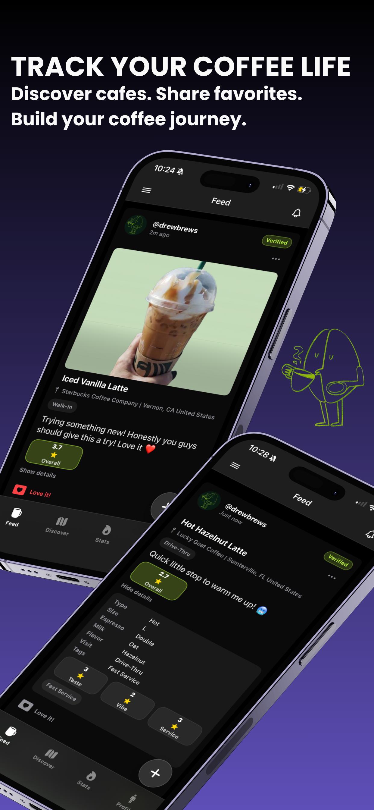
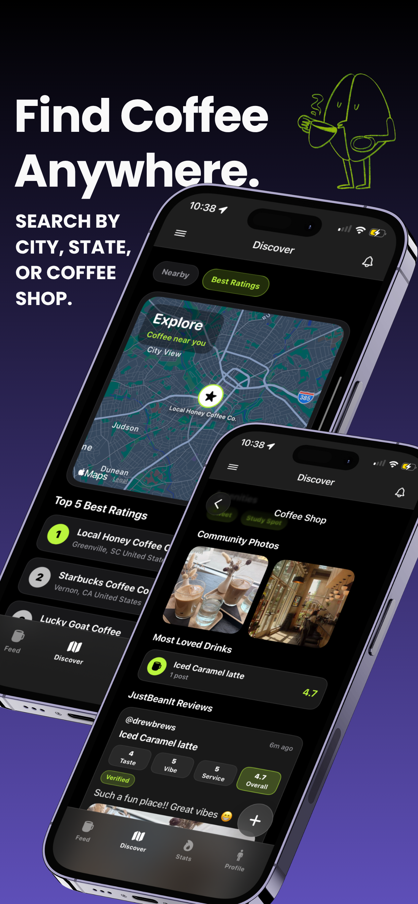
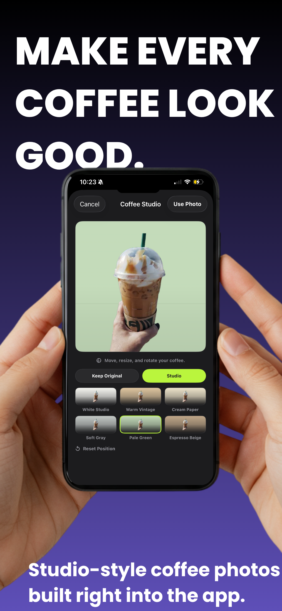
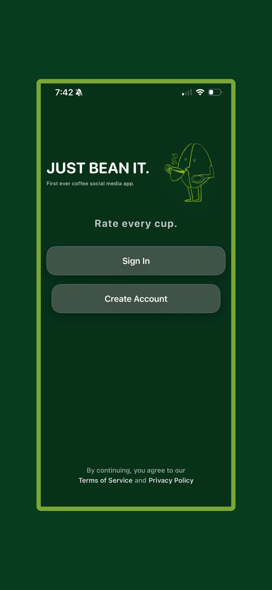
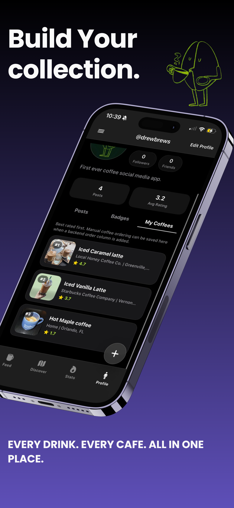
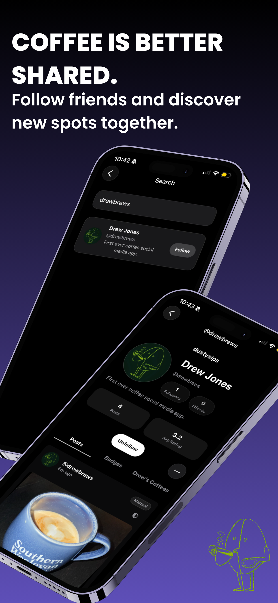
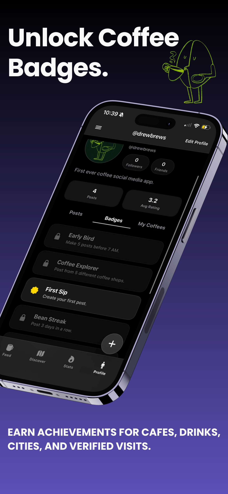

Contact Me
Contact Me

Social media coffee app
Just Bean It is a fully custom-built social coffee platform designed and developed entirely by me, from initial concept and UI/UX design to backend architecture and TestFlight deployment. The app was created as a personal passion project to combine social networking, coffee culture, and location-based discovery into a modern mobile experience.
Built using SwiftUI and Supabase, Just Bean It leverages a scalable real-time backend architecture with authentication, database management, storage, and social interactions fully integrated into the application. The project was developed from scratch without templates, allowing complete ownership over the product vision, technical implementation, and user experience.
Designed to feel clean, social, and coffee-first.







A coffee-first feed for sharing posts, reactions, and real cafe experiences.
Built-in photo editing for polishing coffee shots before they hit the feed.
Personal tracking for favorite drinks, cafe activity, and coffee milestones.
Map-driven cafe discovery for finding nearby coffee shops and revisiting favorites.
Location-aware check-ins help connect posts and reviews to real cafe visits.
Coffee-focused ratings and notes make each shared visit more useful.
Progression and achievement badges reward exploration, posting, and cafe habits.
Save standout drinks, cafes, and posts into a personal coffee library.
Comments, likes, notifications, and social activity are backed by Supabase.
Recent searches and discovery patterns make it faster to return to cafes and people.
Uploaded coffee photos are stored through a scalable Supabase storage workflow.
Responsive glassmorphism-inspired interface with custom theming.
What makes Just Bean It stand out is its focus on creating a dedicated social platform specifically for coffee enthusiasts rather than trying to be a generic review app. The app combines social networking, local discovery, visual storytelling, and coffee culture into a polished mobile-first experience. Features like verified location-based reviews, Coffee Studio editing, map-driven exploration, badges, collections, and social engagement systems create a niche community platform tailored to a passionate audience.
This project demonstrates end-to-end product ownership including product strategy, mobile development, backend engineering, database design, authentication flows, cloud storage architecture, UI/UX design, deployment, and App Store/TestFlight distribution.
Need help, found a bug, or have feedback about Just Bean It?